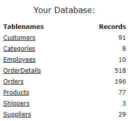

Lesson 2
Introduction
In the prior lesson, you got a small taste of SQL by writing it and see the results.
You wont’ be writing any SQL in this lesson. Instead, before going deeper into SQL, it’s important that you learn some basics about relational databases.
In this lesson, you’ll get:
more information about the W3Schools database and why it’s used initially in this primer
a further introduction into what’s a RDBMS
concepts about how SQL and an RDBMS work together
Learning Objectives
After this lesson, you should be able to:
Describe W3Schools tables
Explain RDBMS basic concepts
Explain how SQL interacts with a RDBMS
W3Schools Database
In the prior lesson you saw this list of tables in the database (db) provided by the W3Schools website for learning SQL.
These tables are good for learning SQL because they contain a small number of rows. So, you can visually inspect them to verify the result sets.
Best of all, you don’t need to do anything to use the database while you’re initially learning SQL.
Click on each table. W3Schools will run a SELECT * query. Examine the columns and rows returned.

RDBMS in a nutshell
The essence of a relational database management system (RDMBS) is that data is organized into tables, each of which is akin to a spreadsheet or a dataframe. When you need data that’s present in multiple table, there’s a way to temporarily connect the tables together via SQL.
Click on the Orders table, the web page will run a SELECT * query against that table. See that it contains the OrderID column. Next, click on the OrderDetails table. See that it also contains a column named OrderID. If you want to run select statement that gets data from both tables then you use the JOIN keyword to temporarily merge these tables together. We’ll discuss doing joins later.
History and terminology
The relational data model is the only way to organize and store data in a database. IBM had previously successfully marketed a database management system (DBMS) named IMS that was based on storing data in a hierarchical (tree-like) structure.
Dr. E.F. Codd published a paper in 1970 that described the mathematical concepts that underpin relational databases. IBM and Oracle used Codd’s ideas to build and market relational database management systems (RDBMS). Other companies soon did the same.
Arcane terminology you probably won’t use but might see:
A db table is technically called a “relation”.
A db column is sometimes call an “attribute”, but technically (and rarely) called a “tuple”.
Note only are tables call “relations”, but they also relate to each other based on common columns. This is why later in this primer, you’ll learn the importance of select from multiple (temporarily joined) tables to access data that’s spread across multiple table.
Want more now? If so, click on this link.
SQL and RDBMS
I recommend that you read through all of this SQL and RDBMS section and then go back and read through it again.
Consider this model. It’s high level and not technically 100% accurate/complete, but it conveys essential concepts about how SQL interacts with an RDBMS.
#1 Database client
Generally speaking, there are two parts of the database client.
The first part is the place where SQL source code exists. This part can be in a GUI that’s designed to be an editor where you write the SQL and click a Run SQL type of button. The W3Schools page is giving you this GUI. You’ll see other options for this part later in this primer.
The second part of the database client is usually some kind of a library that contains the functionality for implementing an interface to the database engine (see below).
In short, the db client gives you a place for the SQL code and way to submit it to the db engine via the database interface library.
There’s another aspect (like the flip side) of the database client, which is the part of the database interface that receives the result set returned by the database engine. What you see in the Result Set part of the W3Schools page is the “flip side” of the client.
#2 Database engine
The database engine is a primary component of the RDBMS application. Often the term “db engine” is used interchangeable with “RDMBS”. There are other components of the RDBMS, but you, as the data analyst, don’t usually need to think about them. It’s fine if you use the phrase, “my SQL is parses by the db engine so the engine can create an access plan for how to read the database to get the data I need.”
The db engine receives data that is physically read from the database and constructs the result set. The result set is then returned to the database interface (dbi), which ultimately returns it the part of the database client where it can be displayed in a result set window in a GUI (or placed into a dataframe if the db client is (for example) a Python program that has embedded SQL.
#3 Data Access Plan
After the db engine parses the SQL then it dynamically creates a program (written in a lower-level language) for how to physically read/write the database file. This program is called the database access plan.
#4 Database
This cylinder symbol represents the database. The square contained within it represent tables in the db.
Keep in mind that physically the database is a file stored on your file system. Actually, in most relational database management systems, there are several files that contain different parts of the database, index file, data files, etc. The good news is that the RDMBS manages all physical reads/writes with these files so you, as a data analyst don’t typically have to think about the physical files that makeup the database.
#5 RDBMS
The database engine as well as other components not shown in the above model along with the files that makeup database.